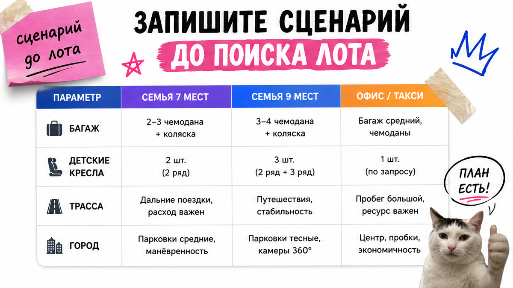
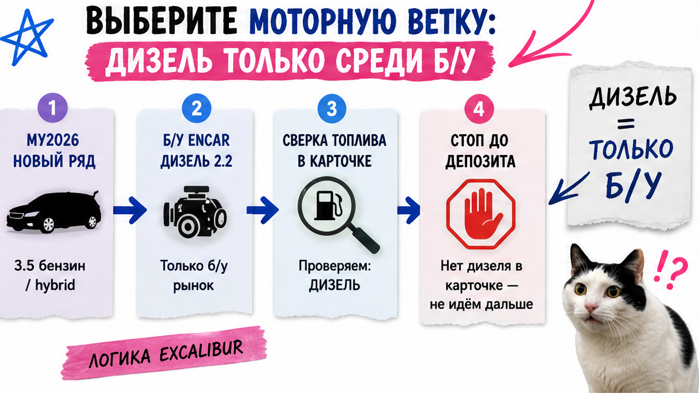
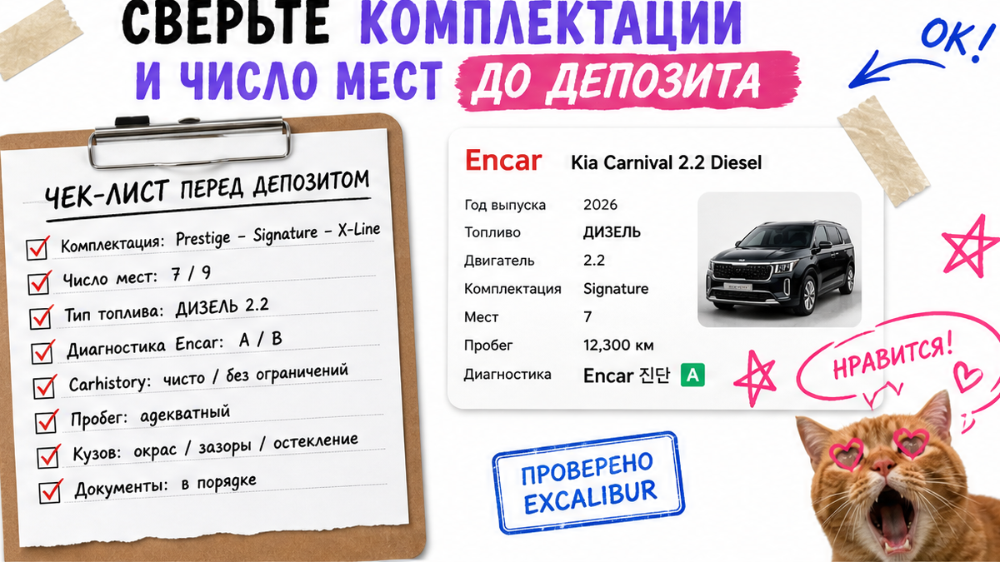

Папа двоих детей уже готовил перевод за "Carnival 2026 Signature": панорама, красивые фото, в голове слово "дизель". Остановился на вопросе: какой мотор в строке топлива и сколько мест на рядах? Боль типичная – хочется киа карнивал из кореи на дизеле 2.2, а в карточке "2026" может быть бензин 3.5 или гибрид 1.6. Ниже чек-лист до депозита: мотор, комплектация, 7/9 мест, история, осмотр. После него вы отложите не тот лот или уйдёте за расчётом с конкретным запросом.
Коротко по делу: Новый The 2026 Carnival в Корее официально идёт только с бензином 3.5 и турбо-гибридом 1.6 – дизель 2.2 снят с нового ряда, но на Encar живёт в б/у. До денег выписываете год, топливо, мощность, trim и число мест. Prestige / Noblesse / Signature / X-Line – про комфорт семьи, не про "самое дорогое слово". Депозит – только после VIN, Carhistory, схемы кузова и расчёта под ключ.
Мы в Авто-Сейлс во Владивостоке часто видим одну сцену: человек смотрит на фото и уже "покупает", а строку топлива читает потом. Encar – корейская площадка объявлений, где лот это набор полей (год, топливо, пробег, опции), а не галерея. Чем раньше зафиксируете мотор и места, тем дешевле ошибка.

До фильтров Encar ответьте коротко: сколько взрослых и детей ездят постоянно, нужны ли два кресла рядом, важен ли высокий потолок и как часто возите багаж. На практике именно этот лист режет споры "давайте лимузин, там красиво".
Hi-Limousine – отдельный высокий кузов (high-roof), не синоним "девяти мест" и не автоматический топ для семьи. У обычного Carnival высота около 1775–1785 мм, у high-roof – около 2045 мм. Потолок ради стояния и штор – смотрите Hi-Limousine. Кресла и багажник – сначала число мест, потом крыша.
Сделайте: заметка: "обычный / Hi-Limousine", "7 или 9", "дети + багаж". Не делайте: начинать с "Signature 2026" и подгонять семью под шильдик.

Свежий факт: у нового The 2026 Carnival в Корее (релиз Hyundai Motor Group, август 2025) официально остались бензин 3.5 и турбо-гибрид 1.6. Дизель 2.2 с нового ряда снят. На Encar дизельные б/у четвёртого поколения по-прежнему народный запрос. Новички путают год в заголовке с наличием дизеля "с завода 2026".
Например, карточка кричит "Carnival 2026", а в топливе – hybrid. Нужен именно дизель – ищете б/у ветку до снятия с ряда, а не "новый MY2026 на солярке".
| Мотор | Где живёт в 2026 | Ориентир мощности (KR) | Кому смотреть |
|---|---|---|---|
| Дизель 2.2 | Б/у на Encar; в новом MY2026 ряда нет | Поздние ~194 ps; ранние KA4 до ~202 ps | Кто хочет дизель и готов проверить пробег |
| Бензин 3.5 | Новый ряд и б/у | ~294 ps | Кто берёт свежий ряд без гибрида |
| Гибрид 1.6 turbo | Новый ряд; Jan–Aug 2026 доля hybrid ~84% | Система ~245 ps | Кто ок с гибридом и отдельным обслуживанием |
Правило мотора:
Нужен дизель 2.2 → только б/у → сверить топливо и ps → не бронировать "новый дизель 2026"
Нужен новый MY2026 → 3.5 или hybrid 1.6 → год и топливо в одной строке заметки
Сделайте: до поиска выбрать одну ветку. Не делайте: писать "хочу Карнивал 2026 на дизеле" без сверки – так вы сами просите несуществующую полку нового ряда.

Trim – уровень оснащения. На пальцах: Prestige ближе к базе, Noblesse добавляет двери/помощники, Signature тянет кожу/память/инвертор, X-Line – внешний dark-пакет поверх топа (бывший Gravity, не "другое авто"). Типичная ошибка – переплатить за Signature, когда семье важнее 9 мест и исправные сдвижные двери.
| Комплектация | Что брать в расчёт семье | Не путать с |
|---|---|---|
| Prestige | База; часто вход на 9 мест | "Плохим Carnival" – это просто меньше опций |
| Noblesse | Комфорт и ассистенты; для 7 мест в MY2026 старт часто здесь | Автоматическим Hi-Limousine |
| Signature | Богаче салон: кожа, память, удобства в поездке | Гарантией идеальной истории лота |
| X-Line | Внешний dark-пакет поверх топа | Отдельной моделью или обязательными 9 местами |
7 мест обычно комфортнее во втором ряду; 9 даёт больше посадочных точек. Двое детей в креслах и бабушка с дедушкой по выходным – чаще 9. Важнее "два капитанских" – 7. Число мест фиксируете до депозита.
Сделайте: в заметке: trim + "7/9" + "обычный / Hi-Limousine". Не делайте: брать самое дорогое слово в объявлении без списка опций под семью.
Мощность и объём бьют по таможенному сценарию и утилю. Суммы в статье не считаем – это живой расчёт под лот. До перевода сверьте: ps, объём, топливо. По KR-specs: 3.5 около 294 ps, hybrid-система около 245 ps; у дизеля цифры по годам плавали (~194–202 ps) – смотрите строку в карточке.
Красивые фото не закрывают ДТП и аренду. До денег нужны:
Encar buy-checklist прямо говорит: не давать контрактный задаток до осмотра и диагностики. В реальном проекте подбора это звучит проще: нет пакета – нет перевода. Красные флаги: замена силовых элементов, крупные выплаты, аренда/такси без объяснения, "сначала депозит, потом документы".
Сделайте: держать стоп-список из пунктов выше в чате. Не делайте: путать бренд посредника из выдачи с проверкой лота на Encar и Carhistory.
Соберите одностраничный чек-лист Carnival – ваш первый результат без веры на слово.
Схема до депозита:
Сценарий семьи → Ветка мотора → Поля карточки Encar → Trim + 7/9 → Carhistory + схема → Диагностика + осмотр → Расчёт под ключ → Депозит
Критерий успеха простой. Напротив лота уже стоят год, мотор и топливо, комплектация, число мест, статус диагностики и истории, плюс стоп-правило: "депозит только после пакета проверок". Пустое поле – ещё рано платить. Пакет собран и мотор совпал со сценарием – идите за личным расчётом под ключ, а не с абстрактным "хочу Карнивал". Актуальные лоты и цифры – в каталоге; детали заказа – в Telegram avtosales125.
Сделайте: отправить себе скрин заметки с полями. Не делайте: бронировать "пока не уехал" без расчёта и осмотра.
Материал проверен: Редакция Авто-Сейлс (эксперты по авто под заказ из Японии, Кореи и Китая).
Достоверность данных: моторы и trim сверены с релизом Hyundai Motor Group по The 2026 Carnival, текстом Autodaily о снятии дизеля 2.2, спецификациями Kia Korea (ориентир по мощности 294 / 245 ps) и разделами Encar Diagnosis / buy-checklist; Hi-Limousine – по официальным features Kia. Кластер спроса сверен по Wordstat на 2026-10-21. Готовые суммы утиля в материале не даём – только личный расчёт по лоту.
Да, но как б/у на Encar, не как новый MY2026 с завода. В новом корейском ряде дизель снят; остаются бензин 3.5 и гибрид 1.6. Перед поиском зафиксируйте ветку "б/у дизель" и сверяйте строку топлива в каждой карточке.
Noblesse обычно про комфорт дверей и ассистентов. Signature – про более богатый салон (кожа, память, инвертор). Выбирайте по списку опций под семью, а не по самому дорогому слову. X-Line – внешний dark-пакет, не отдельная модель.
Детские кресла и частые поездки "полной кассой" – чаще 9 мест. Важнее комфорт второго ряда – смотрите 7. Hi-Limousine не равен "девяти местам": это высокий кузов. Число мест запишите до депозита.
Год, топливо, мощность, trim, 7/9 мест, VIN, Carhistory/insurance, схему кузова, диагностику и живой осмотр. Нет пакета – нет перевода. Расчёт под ключ – по конкретному лоту, не "на глаз" из обзора.
Ps и объём влияют на таможенный сценарий. Сверяйте цифру в лоте: 3.5 около 294 ps, hybrid около 245 ps, дизель – по году (~194–202). Суммы не считайте "на глаз" – берите расчёт под ключ.
Только если нужен высокий потолок, шторы и монитор. Если цель – кресла и багаж, сначала закройте 7/9 и мотор, иначе переплатите за класс кузова, который семье не нужен.